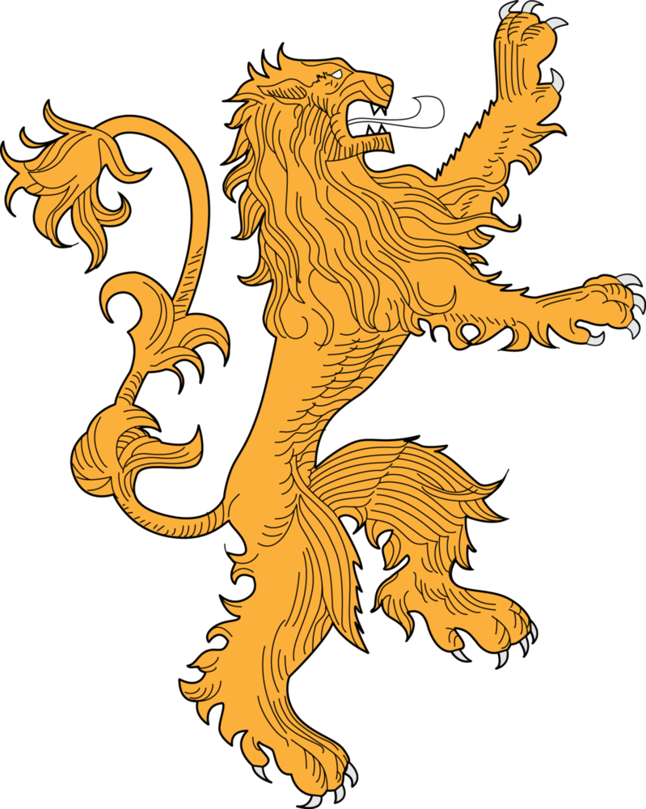

A Casa Lannister de Rochedo Casterly é mais rica entre as Grandes Casas. Seu principal castelo é Rochedo casterly. O brasão dos Lannister é um leão dourado em campo carmesim e seu lema é Ouça-me rugir. O lema não oficial é Um Lannister sempre paga suas dívidas.
| Brasão | Lema | Sede | Região | Título | Arma Ancestral | Fundador | Fundação |
|---|---|---|---|---|---|---|---|
| Um leão dourado sobre um campo vermelho | Ouça-me Rugir | Rochedo Casterly | Terras Ocidentais | Senhor de Rochedo Casterly | Rugido Brilhante | Lann, o Esperto | Era dos Heróis |